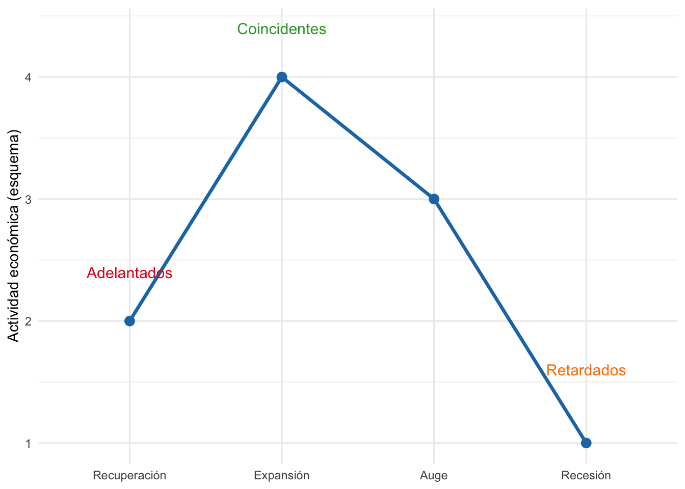
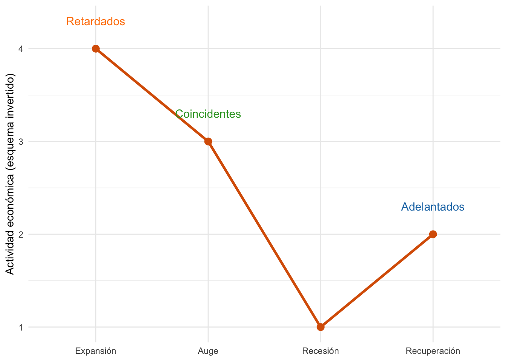

European Financial Advisor (EFA)™
Preparación avanzada con sesiones, ejercicios y simulacros resueltos
Profesor Alberto Bernat
Universidad Europea Miguel de Cervantes (UEMC)
Curso intensivo · Marzo – Junio 2025
Anexo 1: Coyuntura económica
Análisis e interpretación de indicadores de coyuntura
El análisis de los indicadores de coyuntura permite evaluar la evolución de la economía a corto plazo y anticipar posibles cambios en el ciclo económico. Estos indicadores son herramientas clave para analistas financieros, inversores y responsables de política económica.
Se pueden clasificar en tres grandes grupos:
- Indicadores adelantados
- Indicadores coincidentes
- Indicadores retardados
Su correcta interpretación permite comprender mejor el entorno macroeconómico en el que se toman decisiones de inversión.
Indicadores de coyuntura: clasificación
Indicadores adelantados
Anticipan la evolución futura de la economía. Suelen utilizarse para prever fases del ciclo económico.
Ejemplos:
- Índice de confianza empresarial
- Índice de expectativas de los consumidores
- Nuevos pedidos industriales
- Indicadores bursátiles
- Tipos de interés a corto plazo
Indicadores coincidentes
Reflejan la situación actual de la economía. Se utilizan para confirmar fases del ciclo ya iniciadas.
Ejemplos:
- Producto Interior Bruto (PIB)
- Producción industrial
- Ventas minoristas
- Consumo eléctrico
- Empleo total
Indicadores retardados
Reaccionan con cierto desfase respecto al ciclo económico. Se usan para confirmar cambios una vez ocurridos.
Ejemplos:
- Tasa de paro
- Inflación
- Morosidad bancaria
- Tipos de interés a largo plazo
Ciclo económico y su relación con los indicadores
Los indicadores no se interpretan de forma aislada, sino en relación con el ciclo económico, que incluye:
- Expansión
- Auge
- Recesión
- Recuperación
Cada fase tiene un patrón propio en los indicadores. Por ejemplo:
- Durante la expansión, aumentan el empleo y la producción.
- En la recesión, se reduce la demanda y aumentan el desempleo y la morosidad.
Interpretación conjunta de indicadores
Para una visión precisa es recomendable:
- Combinar indicadores adelantados y coincidentes.
- Tener en cuenta su origen (INE, Banco de España, Eurostat, etc.).
- Evaluar si están desestacionalizados y corregidos por calendario.
También es importante interpretar la tendencia, no tanto el dato puntual.
Tip
Ejemplo práctico:
Un descenso continuado del índice de confianza del consumidor puede anticipar una caída del consumo y, por tanto, del PIB.
Limitaciones del análisis coyuntural
- Retraso en la publicación de datos
- Revisiones frecuentes que pueden cambiar las conclusiones iniciales
- Distorsiones estacionales
- Riesgo de sobreinterpretar datos aislados
Por ello, siempre debe aplicarse un enfoque global, comparativo y prudente.
Resumen de indicadores de coyuntura
El análisis de indicadores de coyuntura es esencial para anticipar y comprender los movimientos del ciclo económico. Su uso correcto permite una toma de decisiones más informada en materia de inversión, política económica o planificación empresarial.
Los indicadores de coyuntura permiten interpretar el comportamiento de la economía a corto plazo y anticipar fases del ciclo económico. Se clasifican en tres grandes grupos:
| Tipo de indicador | Descripción | Ejemplos | Momento del ciclo |
|---|---|---|---|
| Adelantado | Anticipan cambios en la actividad económica | Índice de confianza, pedidos industriales, bolsa | Inicio de expansión o recesión |
| Coincidente | Reflejan la situación actual de la economía | PIB, producción industrial, ventas minoristas | Durante la fase actual del ciclo |
| Retardado | Confirman tendencias ya ocurridas | Paro, inflación, morosidad | Tras un cambio de fase |
Ciclo económico tradicional
El siguiente gráfico representa las fases clásicas del ciclo económico —recuperación, expansión, auge y recesión— junto con la posición habitual de los indicadores:
- Adelantados: se activan al inicio de la recuperación.
- Coincidentes: acompañan la fase de auge o expansión.
- Retardados: reaccionan con retraso, confirmando cambios ya ocurridos.
Ciclo económico en contexto O: comportamiento inverso
En algunos escenarios atípicos, como crisis exógenas o reacciones tardías de política económica, se puede observar un patrón invertido en el comportamiento del ciclo económico. En estos casos:
- Los indicadores retardados pueden activarse primero (por ejemplo, aumento de tipos o inflación repentina).
- Los coincidentes reflejan el ajuste una vez iniciado.
- Los adelantados, sorprendentemente, reaccionan más tarde, reflejando una corrección o shock ya en marcha.
Este fenómeno, conocido como contexto O, exige una lectura crítica de los indicadores, evitando depender únicamente de los patrones históricos.

Aplicación práctica en asesoramiento financiero
El análisis de los indicadores de coyuntura no solo sirve para comprender el entorno macroeconómico, sino también como una herramienta estratégica para el asesor financiero. Su correcta interpretación permite:
- Anticipar cambios en los mercados financieros.
- Ajustar carteras de inversión en función de la fase del ciclo económico.
- Mejorar la comunicación con clientes sobre riesgos y oportunidades.
Estrategias según el tipo de indicador
Indicadores adelantados
Útiles para adaptar con antelación la exposición a activos más sensibles al ciclo económico, como la renta variable o sectores cíclicos.
Ejemplo: un repunte en la confianza del consumidor puede justificar un mayor peso en consumo.
Indicadores coincidentes
Permiten validar si la estrategia actual está alineada con la realidad económica. Sirven para ajustar el timing de decisiones tácticas.
Indicadores retardados
Aunque llegan con retraso, confirman tendencias. En entornos inciertos, ayudan a consolidar decisiones de inversión previas o planificar rotaciones de activos.
Consideraciones clave
- No tomar decisiones basadas en un único indicador.
- Contrastar los datos macroeconómicos con análisis técnico y fundamental.
- Prestar atención a los contextos O, donde el comportamiento de los indicadores se desincroniza del ciclo tradicional.
Tip
Consejo para el asesor financiero
No se trata de predecir el futuro, sino de entender mejor el presente que el resto del mercado.